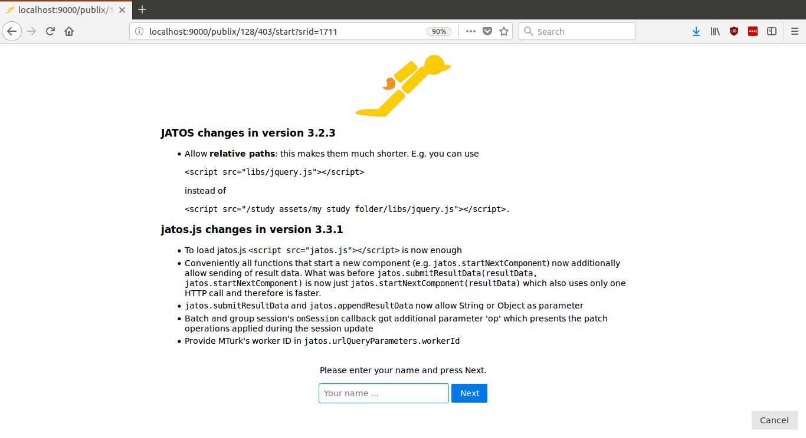

Overview
JATOS gives you complete freedom on the client side. You can do whatever you like! You can use in your study code whatever technologies work in browsers (e.g. HTML5 canvas, CSS3 or 3D graphics with WebGL). Additionally browser-side JavaScript libraries or frameworks like jQuery, Bootstrap, Highcharts, p5, or jsPsych are possible and will smooth out your path to quick and easy development. Of course the same is true for CSS modules (e.g. Pure.css, Material Design). These are some examples of how to use these client-side frameworks in combination with JATOS.
Click on the study name to download the .zip file and import it into JATOS.
If you have trouble downloading a study (common in Safari browsers) check this troubleshooting tip.
If you wrote an example study that you’d like to share, please feel free to contact us and we’ll include it in this page!
| Study Name | Brief Description | Frameworks Used | JATOS Features | Example Image |
|---|---|---|---|---|
| Hello World | Everything starts with a Hello World! | - | - | - |
| v3.3.1 Features § | Simple example implementing the changes in v3.3.1 | - | - |  |
| Go-/No-Go § | Go/NoGo task. Includes instructions | jsPsych | - |  |
| Randomize Tasks Between Workers § | Template to randomly assign participants to conditions A, B, or C (with fixed numbers for each condition). | - | Batch session |  |
| Lexical Decision | Participants classify whether a string of letters is a word or a nonword. From factorsdb. | jsPsych | - |  |
| Lexical Decision ∗ | An example of running OpenSesame experiments with JATOS via OSWeb. | OpenSesame, OSWeb | - |  |
| Random Dot Kinematogram ∗ | A random dot kinematogram (RDK) for online visual psychophysics and the use in web browsers. By Sivananda Rajananda, Hakwan Lau, Brian Odegaard (preprint). | jsPsych | - |  |
| Demographic and Survey Questions ∗ | SurveyJS is an easy to use library with a great online interface to create surveys and questionaires. | SurveyJS | - |  |
| Instructions with Google Slides ∗ | Use Google Slides to make an quick, easy and versatile instruction page. Might not be the prettiest, but it does the job. | Google Slides | - |  |
| p5.js 2D Graphics Showcase ∗ | p5.js is a graphics library to easily create 2D and 3D graphics without deeper knowledge of how those graphics are rendered. Additionally one can add user interaction, video, sound, or capture from the webcam or the mic. Have a look at their example section. | p5.js | - |  |
| Video | Shows how to embed a video with HTML 5 by using the browsers video player, YouTube, or the video.js JavaScript library. | - | - |  |
| Results in CSV | Simple example of how to store results in CSV format. | - | - |  |
| Simple Consent Form | Simple example of a consent form with text and buttons ‘I agree’ and ‘Cancel’. | - | - |  |
| Introduction and Consent with Preview Feature | This mobile-friendly example just has an introduction component that includes a consent text. | - | Preview links |  |
| 2048 Game | This addictive game is created by Gabriele Cirulli. | - | - |  |
| Plot Data | A slightly different use for JATOS: as a regular server to display an HTML page that displays study results. | Highcharts | - |  |
| Attentional Capture ∗ | Standard task to show how to use OSWeb with JATOS. | OpenSesame, OSWeb | - |  |
| Survey (Self Regulation) | A standard questionnaire. Taken from expfactory. | JQuery Form | - |  |
| Invaders Game | Classical arcade game. From Phaser’s examples page. | phaser.io | - |  |
| HexGL Game ∗ | Futuristic racing game by Thibaut Despoulain. | HTML5, WebGL | - |  |
| Visual Metacognition | Taken from the experiment factory. | jsPsych | - |  |
| Metacognition with Arithmetics § | Following Pinheiro-Chagas, P., Dotan, D., Piazza, M., & Dehaene, S. (2017). Finger tracking reveals the covert stages of mental arithmetic. Open Mind: Discoveries in Cognitive Science, 1(1), 30–41. doi:10.1162/opmia00003 | - | - |  |
| Binocular Rivalry § | Using Gabor patches to demonstrate binocular rivalry with a Google Cardboard | - | - |  |
| Bistable Perception § | - | - | - |  |
| Change Blindness § | - | - | - |  |
| Dot Densitity Metacognition § | - | - | - |  |
| Deary-Liewald task with PsyToolkit § | Taken from PsyToolkit’s experiment library | PsyToolkit | - |  |
| Clock Drawing § | Submit images as result data to JATOS by converting them into base64-encoded text. | jsPsych | - |  |
| Potato Compass | Drag & drop elements. | interact.js | - |  |
| Browser Information and Worker Tracking § | Gets information about the participants browser, computer and location | - | - |  |
| Study, Group, and Batch Session § | See JATOS’ three different session types in action. | - | Study, Group, and Batch session data |  |
| Group Chat ∗ | Let members of a group talk to each other. | - | Group Session, Group Broadcast Message |  |
| Batch Chat ∗ | Let members of a batch talk to each other. | - | Batch Session | |
| Chat with Markdown and Emojis § | Chat that builds on top of Batch Chat and adds suports for Markdown and emojis | - | - |  |
| Prisoner’s Dilemma § | Game in which two workers interact with each other in the same study run. | - | Group Study, Group Direct Messaging |  |
| Snake Game ∗ | Multiplayer real-time snake game. | - | Group Study, Group Broadcast Message |  |
∗ Requires JATOS version 3.1.1 or newer
§ Requires JATOS version 3.3.1 or newer